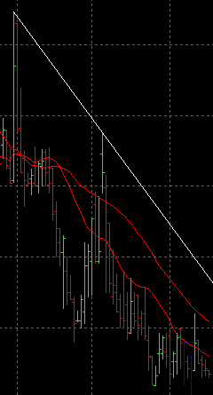
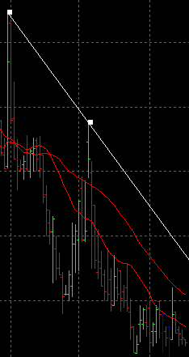

TrendLine
Description:
A line that can can have any angle or length the
user wishes. Commonly used to indicate trends on
a
chart.

To create a TrendLine, select draw mode from the main toolbar and
right click with the mouse on the chart
you wish to apply it to. This can be either the main chart area or any
of the indicators that appear in the indicator chart area. Select "New
Chart Object" from the popup menu and select TrendLine from the menu.
After selecting the menu option, the mouse
pointer will change
to a hand pointer. The user must select the start and end points of the
TrendLine. The first point to select is the start point. Click the left
mouse button to select the start point. Next the user must select the
end point by also using the left mouse button. Once both points have
been selected, the TrendLine
will appear on the chart.
Selecting:
In order to edit the TrendLine,
the user must first select it. First, the user must be in draw mode.
Select the TrendLine by left clicking with
the mouse anywhere on the line. The object will be selected when a
2 grab boxes appears like this:

You
then can right click the mouse for a context menu for the object. You
may also double-left click on the object to bring up the edit dialog
directly. There are
three options when a TrendLine is selected. Edit, Move and Delete.
Edit:
The trend line settings are defined as follows:
- Color - The color of the trend line.
- Bar Field - The bar field to lock the trendline point on. Only
used if 'Use Bar' is selected.
- Use Bar - If checked, bar field values are used instead of user
selected points.
- Set Default - If checked, all settings will default to the
current values when new ones are created.
- Extend Line - If checked, the line will extend into the infinite
future. If not checked, the line will only be drawn between the start
and end points selected.

Move:
To adjust either the start or end points of the TrendLine, click the
left mouse button on
the either of the grab boxes. The TrendLine will then follow the mouse
pointer using the opposing grab box as the axis. To
drop the TrendLine, click the left mouse button.
Delete:
This will permanantly delete the TrendLine from the chart.